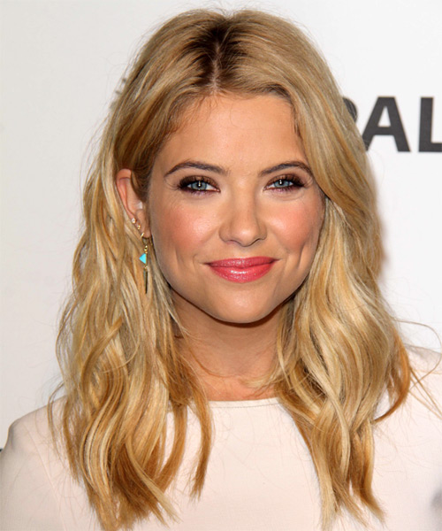
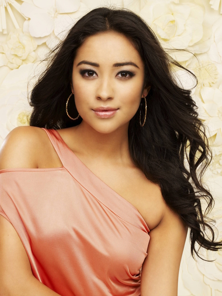

Personagens Principais
Spencer Hastings
Interpretada por Troian Bellisario, é a inteligente do grupo. De uma família rica, ela tenta sempre agradar aos pais, que mostram claramente mais carinho pela sua meia-irmã mais velha, Melissa, na qual, não se davam muito bem, principalmente pelo péssimo hábito de Spencer em cobiçar os namorados de Melissa. Ela foi a única pessoa corajosa o suficiente para enfrentar Alison, sem saber na época que as duas são primas, e uma das últimas a vê-la viva antes de seu desaparecimento. No final da primeira temporada, ela começa a namorar Toby. Na quarta temporada, Spencer fazia o uso de drogas para aumentar seu desempenho nos estudos, onde, insônia e paranoia eram alguns dos sintomas. Na sétima e última temporada, ela descobre que não é filha biológica de Verônica, mas sim, de Mary Drake, mais tarde é revelado que ela tem uma irmã gêmea chamada Alex Drake.
Hanna Marin

Interpretada por Ashley Benson, é a sofisticada em relação a moda, e lutava contra problemas de auto-estima e bulimia. Desde que seus pais se divorciaram, Hanna vive permanentemente com a mãe, Ashley. Ela se sente traída por seu pai, que se casou novamente, e não se dá bem com sua madrasta e a filha dela. Quando sua amiga Alison desapareceu misteriosamente, Hanna transformou-se na garota mais popular da escola, junto com sua nova melhor amiga, Mona Vanderwaal. Inicialmente ela namorava Sean, mas eles acabaram por terminar, eventualmente no fim da primeira temporada ela começa uma relação com Caleb, um hacker metido a bad boy. Hanna parece não ser a mais brilhante do grupo, mas consegue surpreender os que a subestimam.
Aria Montgomery
Interpretada por Lucy Hale, é a artística do grupo, que volta a Rosewood com sua família, depois de passar um ano na Islândia. Antes da morte de Alison, ela descobriu que seu pai estava tendo um caso com uma de suas ex-alunas. Alison a incentivou para contar a verdade para sua mãe, mas em vez disso, Aria relutantemente concordou em manter o segredo de seu pai. Meses após o segredo ser revelado, seus pais se separam. Em um bar, ela conhece um cara e o beija, mas logo no seu primeiro dia aula ela descobre que esse "cara" é seu professor de Literatura, Ezra Fitz. Eles decidem continuar a relação em segredo por algum tempo, até que finalmente tornam público o seu romance, após vários problemas enfrentados. No entanto, eles eventualmente terminam no final da terceira temporada devido a alguns acontecimentos surpreendentes. Já na quarta temporada, eles começam a se reconciliar, mas é revelado que Ezra a usou para escrever um livro sobre o assassinato de Alison e isso põe um fim na relação do casal e ele deixa o cargo de professor. Mas na quinta temporada o casal volta a namorar, porém terminam novamente pois Ezra quer que Aria aproveite o máximo quando for para a faculdade.
Emily Fields

Interpretada por Shay Mitchell, é a esportiva do grupo. Emily era a mais próxima de Alison antes de seu desaparecimento, e também estava apaixonada por ela. Emily é homossexual (mas ainda não havia revelado,no começo da serie ate então ela era Hetero) ela logo se apaixona e expõe seu amor por Maya St. Germain, que se tornam namoradas, porém no fim da segunda temporada terminam o namoro, depois Emily começa a namorar sua colega de natação, Paige McCullers com quem saiu brevemente durante a segunda parte da primeira temporada e a primeira parte da segunda temporada, elas namoraram novamente do começo da terceira até o fim da quarta temporada, e voltaram na quinta temporada. Porém meses depois, Paige se muda com seus pais para Califórnia.
Alison DiLaurentis
.png)